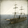
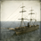

Requires
- Buildings:

- Arts:

Enables
- Units:


 


Basic Building Statistics (can be modified by difficulty level, arts, skills, traits and retainers)
- Cost: 10500
- +1500 to wealth from ports in this province
- Coastal defences will be disabled once the port's health falls to 50%
- Coastal defence range: 10
- Coastal defence level: 2
- Enables recruitment of Rank 1 foreign veteran
- +3 to possible trade routes (sea)
- Recruitment capacity (ship under construction): +2
- +10 per turn to town growth from trade within this province
- Improves export capacity (increases trade values) by +250
- -2 to happiness from modernisation
Clan Effects
- +4 to modernisation (clan development)
- Establishes trade routes with the Western Powers.
Description
America is a nation that means business.
An American trading district improves the port defences in several ways, and improves the value of exports to the outside world. In 1854, the Treaty of Kanegawa, concluded between Commodore Matthew Perry of the US Navy and the representatives of the Shogun, began the process of opening up Japan to American business interests. Perry had wanted to deal with the Emperor but, from an Imperial perspective, dealing with foreigners was completely beyond the pale. The treaty was more than a little one-sided in terms of what the Americans got. Like the other treaties Japan signed, it reflected the balance of power between the closed, backward Japan and the industrialised, colonial nations of the West. These were a spur to Japanese modernisation efforts and, by 1900, Japan could be counted a developed, modern nation in many ways: Japanese troops fought alongside European soldiers during the Boxer Rebellion in China, for example.